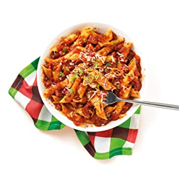

Hannah Browns Easy Pasta Recipe

Description
My wifes easy pasta recipe. Helpful when it's a late night
home from work!
Ingrdients
- 3 handfuls of Penne Pasta
- 1 Block of Halloumi Cheese
- 1 Bowl of Grated Cheese
- 1 Dolmio Stir in Pot
Steps
- Boil the pasta for 10minutes.
- Drain & cut the halloumi before frying it until gold
& brown.
- Drain the pasta & add the Dolmio Stir in pot.
- Add the fried halloumi to the pasta and stir together.
- Leave to stand for 2 minutes before stirring.